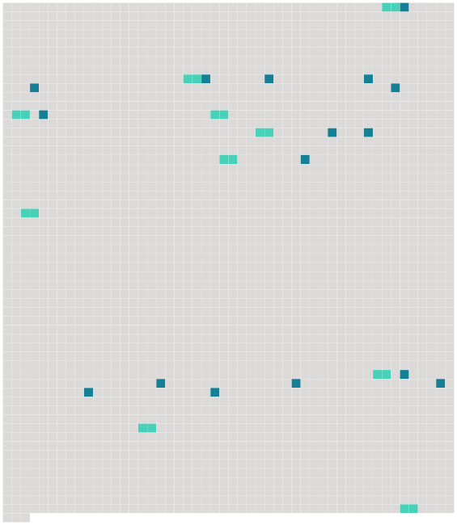

Longueur nb maillons : 26 mentions |
 |
Dans ce temps -là, on n'y allait pas tout voir en une après-midi comme aujourd'hui ; c'est qu'il y avait, en plus du Palais à visiter, ses habitants qui se trouvaient être un Louis XV, [une dauphine] [qui] s'appelait Marie-Antoinette, accompagnés de toute leur famille, sans oublier Mme Du Barry. [19 phrases] « Nous y étions depuis quelque tems quand vint à passer [la Dauphine] [qui] allait au lever du roi. [Elle] est très jolie, blonde et fort bien faite, [elle] a un air gai, vif et noble qui plaît beaucoup. [Elle] était vêtue d'un habit de cour fond or avec une belle garniture de martre zybeline, la gorge et les épaules nues, et une quantité de diamans. Des dames d'accompagnement aussi en habit de cour [la] suivaient. [5 phrases] Nous le vîmes revenir et de là nous allâmes voir dîner [la Dauphine] [Elle] dîne dans une salle meublée de Gobelins et ornée de beaux lustres de cristal. Le Dauphin et [la Dauphine] sont à côté l'un de l'autre. [6 phrases]
[La Dauphine] leur parla souvent, et quand [elle] eut dîné, [elle] alla faire un petit compliment à chacune. [7 phrases] Le Roi était en haut, le Dauphin à sa droite, [la Dauphine] à sa gauche. À côté d' [elle] était la comtesse de Provence qui n'est point jolie. [15 phrases] [La Dauphine] et la comtesse de Provence se parlèrent à l'oreille. [52 phrases] De là nous passons à ceux de [la Dauphine] [Son] salon de jeu est meublé d'une tapisserie des gobelins, les sièges sont de velours avec des crépines d'or. [Sa] chambre à coucher est meublée d'une tapisserie fond cramoisi brochée en or, [sa] toilette est de vermeil richement travaillée, couverte d'un tapis de velours rouge où [ses] armes sont brodées. À droite et à gauche de [son] lit, sont les portraits de l'empereur et de l'impératrice-reine, [ses] parens. [7 phrases] « Au dîner du comte et de la comtesse de Provence, ce sont les mêmes cérémonies que chez [la Dauphine] , mais ils n'ont pas l'air si gai, ni de si bonne amitié. [24 phrases]
Le Roi est aussi fort haï de ses sujets, soit à cause de sa faiblesse, soit à cause des mauvais ministres qu'il a choisis ou des grandes dépenses qu'il fait pour Mme du Baril, mais par contre le Dauphin et [la Dauphine] sont chéris de tout le monde. |
 |
La ressource peut être téléchargée sur la page Ortolang
Si vous avez des questions ou vous voyez des erreurs, merci d'envoyer un mail à silvia.federzoni89@gmail.com
Site développé par S. Federzoni (contact)